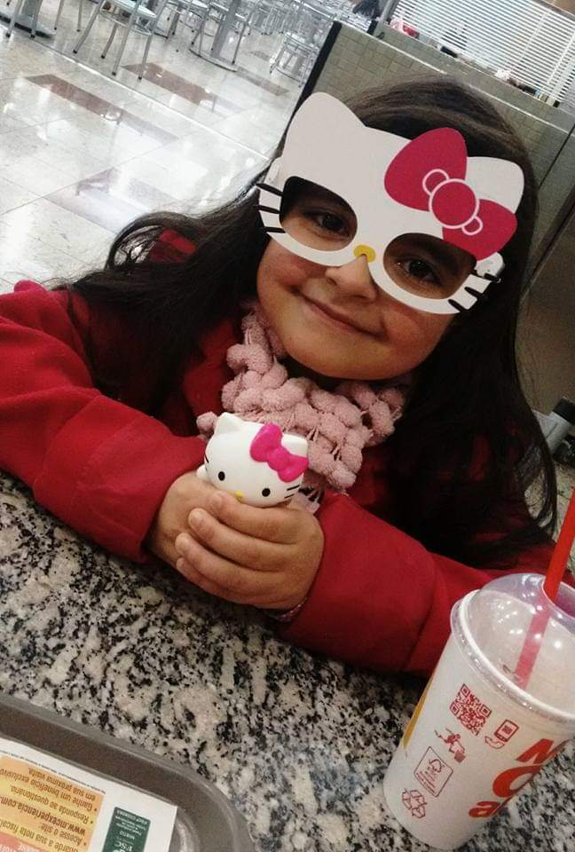

Karoliny Cristiny Silva
Líder Técnica
Desenvolvedora FullStack
Sobre
Curiosidades da Karol
- Nasceu em 27 de março de 2010
- Gosta de desenhar, jogar videogame e assiste de tudo
- Já foi Youtuber
- Odeia Spelunker
- Tem humor duvidoso
Participação na Amostra de 2025
Jogo: Jump, Bruno! Jump
Em 2025 participou do desenvolvimento do jogo Jump, Bruno! Jump, apresentado durante a Amostra do curso.
Integrantes
- Karoliny Silva — Programação, planejamento e design
- Alexandre Douglas — Programação, planejamento e design
- Sophia Soares — Documentação, planejamento e design
- Gustavo Benício — Planejamento e design
- Pedro Guedes — Documentação, planejamento e design
- Samoel da Silva — Planejamento, suporte e design
- Willian dos Santos — Planejamento
Tecnologias utilizadas
- Python
- Pygame
- Git